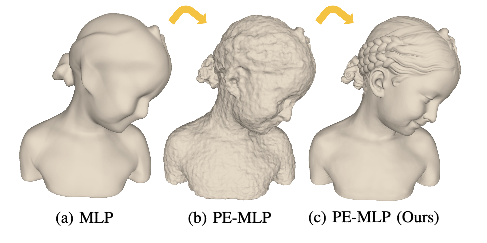

|
Guying Lin I'm a second year M.Phil. student at the University of Hong Kong, supervised by Prof. Taku Komura and Prof. Wenping Wang. Prior to that, I received my B.Eng. (Hons) from Zhejiang University.
|

|
ResearchI am interested in computer graphics, machine learning, and computer vision. Currently, my research focus is on neural implicit surface representation. However, I have a strong enthusiasm for exploring various topics in the realm of computer graphics and 3D-related subjects! I am looking for a Ph.D. position in 24 Fall. |

|
Patch-Grid: An Efficient and Feature-Preserving Neural Implicit Surface Representation
Guying Lin*, Lei Yang*†, Congyi Zhang, Hao Pan, Yuhan Ping, Guodong Wei, Taku Komura, John Keyser, Wenping Wang†(*: equal contribution; †: corresponding author) Provisionally accepted by TOG with revisions arXiv A unified neural implicit representation that models complex shapes efficiently, preserves sharp features, and effectively models surfaces with open boundaries and thin geometric features. |
|
Surface Extraction from Neural Unsigned Distance Fields
Congyi Zhang*, Guying Lin*, Lei Yang, Xin Li, Taku Komura, Scott Schaefer John Keyser, Wenping Wang(*: equal contribution) ICCV, 2023 project page / arXiv / code A robust and efficient method to extract a high-quality surface from neural unsigned distance functions (UDFs). |

|
On optimal spatial sampling for learning SDF with positional encoding
Guying Lin*, Lei Yang*, Yuan Liu, Congyi Zhang, Junhui Hou, Xiaogang Jin, Taku Komura, John Keyser, Wenping Wang (*: equal contribution) Under Review project page Studying the optimal sampling problem in network training for modeling neural implicit surfaces, especially those with rich geometric details. |

|
Progressively-connected Light Field Network for Efficient View Synthesis
Peng Wang, Yuan Liu, Guying Lin, Jiatao Gu, Lingjie Liu, Taku Komura, Wenping Wang Under Reivew project page arXiv code A Progressively-connected Light Field network for the novel view synthesis of complex forward-facing scenes which is able to achieve significantly better rendering quality than the vanilla neural light fields and comparable results to NeRF-like rendering methods. |
|
Neural parametric surfaces for shape modeling
Lei Yang, Yongqing Liang, Xin Li, Congyi Zhang, Guying Lin, Alla Sheffer, Scott Schaefer John Keyser, Yuan Liu, Taku Komura, Wenping Wang arXiv, 2023 arXiv The first piecewise neural surface representation that allows coarse patch layouts of arbitrary n-sided surface patches to model complex surface geometries with high precision, offering greater flexibility over traditional parametric surface. |
MiscellaneaIn addition to my passion for computer graphics, I have a keen interest in journalism. During my undergraduate studies, I had the privilege of interning as a journalist at Qianjiang Evening News, one of the prominent news organizations in China. Throughout my tenure, I had the invaluable opportunity to publish more than 20 news articles under the guidance of the Chief Reporter. Additionally, during my free time, I derive joy from sketching, creating colorful paintings, and practicing Chinese traditional calligraphy. |
|
Last updated Dec. 2023. Template from Jon Barron. |